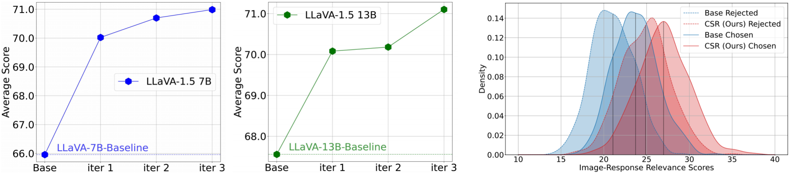

Left: Different parameter sizes of LLaVA 1.5 can enhance their learning through CSR iterations. Right: The change in image relevance scores before and after employing CSR.
@article{zhou2024calibrated,
title={Calibrated Self-Rewarding Vision Language Models},
author={Zhou, Yiyang and Fan, Zhiyuan and Cheng, Dongjie and Yang, Sihan and Chen, Zhaorun and Cui, Chenhang and Wang, Xiyao and Li, Yun and Zhang, Linjun and Yao, Huaxiu},
journal={arXiv preprint arXiv:2405.14622},
year={2024}
}